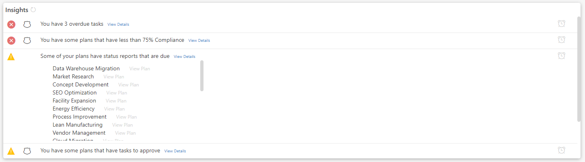
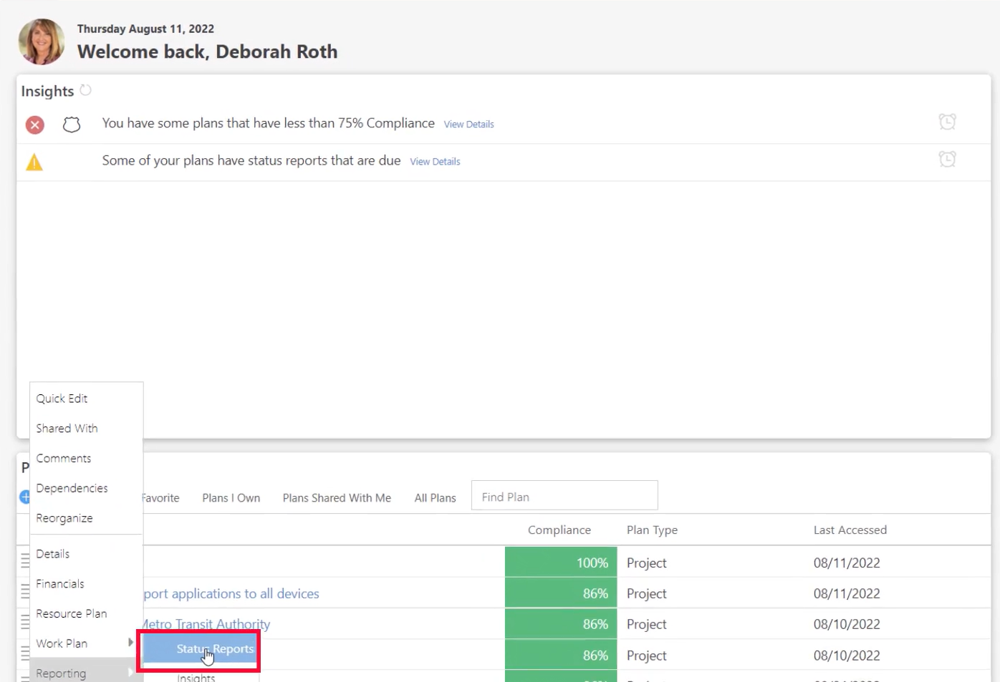
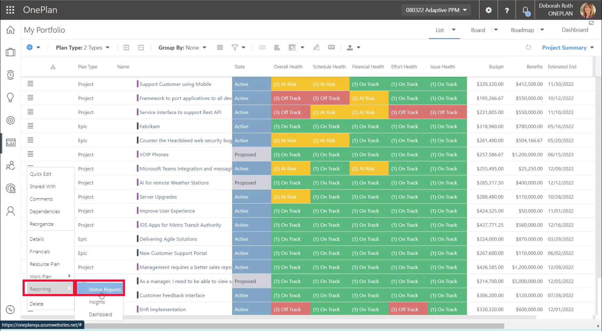
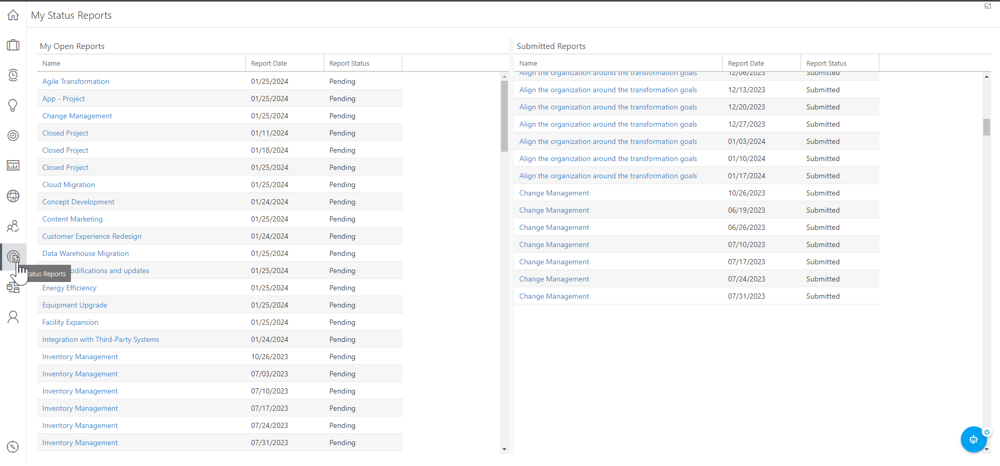
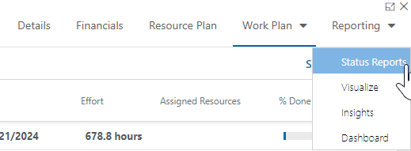

Status Reports
OnePlan's My Status Reports centralizes all status reports a user needs to access across various OnePlan Plans. It gives users the ability to manage and view all reports in a single area and the added convenience of seeing which reports need to be updated and which ones have been submitted for approval. The feature ensures transparent communication, aligned updates, and team visibility.
Create, Update, and Submit Status Reports
This article explains how to open, update, and submit status reports. This article assumes that your OnePlan Administrator has already configured Status Reports for your OnePlan environment.
One of the nice things about OnePlan is that you can centralize all your work and initiatives into One Plan and allow managers to create and submit a standard status report.
Access Your Status Report
There are several ways you can access your status reports:
-
Home Page - Insights: If a status report is due or ready for submission and approval you’ll notice it in your insights. Here you see I have a message that some of my plans have status reports that are due. Click on View Details to see all of the status reports that require your attention. Then click View Plan to access the status report for that plan.
 -
Home Page - Plans : Or you can navigate to your plans by clicking the hamburger, go to reporting and select status reports to display the status report that requires my attention (scroll to the lower part of the report to show that I need to update the status based on the information that has already been entered into OnePlan (like project information and financials.)
 -
My Portfolio : Or, if you have access to your organization’s portfolio, you can navigate to the portfolio view (click portfolio view), find your plan within the portfolio view, again, clicking on the hamburger, click reporting click status reports.
 -
Status Report Area : We have a status report view here on the main navigation menu. If you click here, you’re going to see a view that shows you a view of all open reports that you need to complete, review or submit to management for approval or, if you are in the manager role, have reports waiting for you to approve and send back to your PMs
 -
Plan - Reports Tab : If you are working in a plan, you can also access the status report by clicking on the Reports tab, and selecting Status Reports from the drop-down menu.

Create a New Status Report
If you have not created a status report for your plan previously, and are running the report for the very first time, you will need to click Create Report . This will run the status report and generate a new report for you. The status report will then run on the schedule set up on the back end of OnePlan by your Administrator.
Update Your Status Report
The first thing you’ll see in the upper right-hand corner is that you can have snapshots of these status reports. From this drop-down, you can access all of your current and historical status reports. In this example, the status report for 1/25/2024 is Pending and needs to be reviewed, updated, and submitted.
Basically what OnePlan does is it generates a status report based on the current data in your plan. What’s nice about this is that you can come into your pending status report and make modifications before submitting it. Any changes that you make in the status report will also be reflected in the plan itself, so your data is accurate across the board.
You can edit any editable field in the status report. So, for this example, I may need to update the Status Health of my plan before I submit this report. I can simply click into the Status Health field, and select the correct value. This updated Status Health value will also be reflected in the live plan as well.
Perhaps I need to update the Forecast value in this status report. I can click into the Forecast field and update this value. Again, this value will also be updated in the plan itself.
Finally, maybe I would like to add some Additional Comments into the status report, I can enter those comments into the Additional Comments field, and those comments will be tracked as your plan progresses and future status reports are generated.
I can even use Sofia to generate content for these multi-line text fields! Check out this short video for an example of using SofiaGPT to help update a status report.
Submit Your Status Report
Once you have your status report set up and updated the data, you can now submit this report to your manager.
To submit the status report, simply click Submit . Then confirm the submission in the pop-up. The status report will be sent off to the required reviewers for their review and approval.
Once submitted, OnePlan will lock down the status report so now you can no longer update, add or make changes to this status report.
Recall Your Status Report
You can recall a status report before a manager approves it. So if you forgot something, you can come back and recall it. As soon as a manager approves it, that report becomes the official status report for that period.
To recall a status report, simply click Recall .
Export Your Status Report
Once your status report has been approved, you may want to export the report so you can share it with other stakeholders who may not be using OnePlan. You can export the report as a Word document, PDF, or in an email.
To export your entire status report, click Export , then select your desired format from the drop-down. The report will then download into your downloads folder, or an email will generate.
You can also print off selected multi-line text fields from your status report. Click into the desired multi-line text field, then click the Print icon in the text editor toolbar. This will allow you to save the field as a PDF.
For more information on OnePlan Status Reports, check out the following resources: